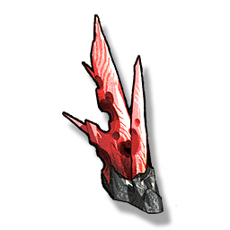

Scarletthorn
Resources

Material for Crafting.
A distinctive mineral in the shape of a cluster of needles, sharp and hard in texture. Creations made of Scarletthorn are often used for cutting metal and other crystals, or for the production of weapons.